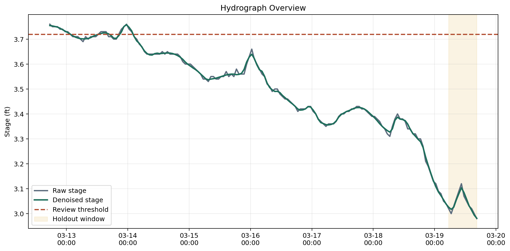
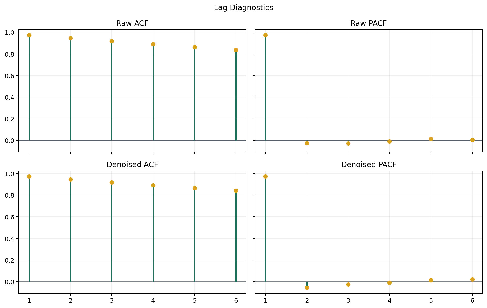
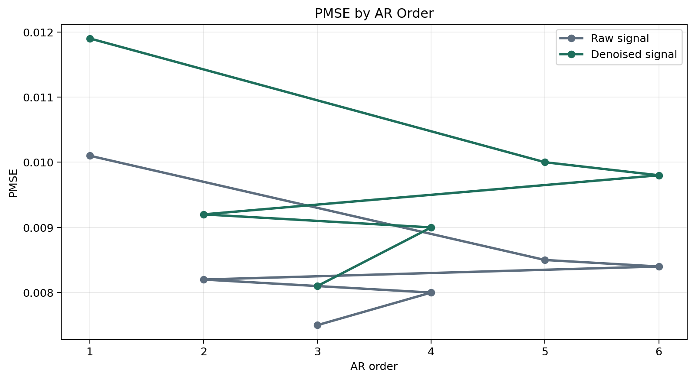
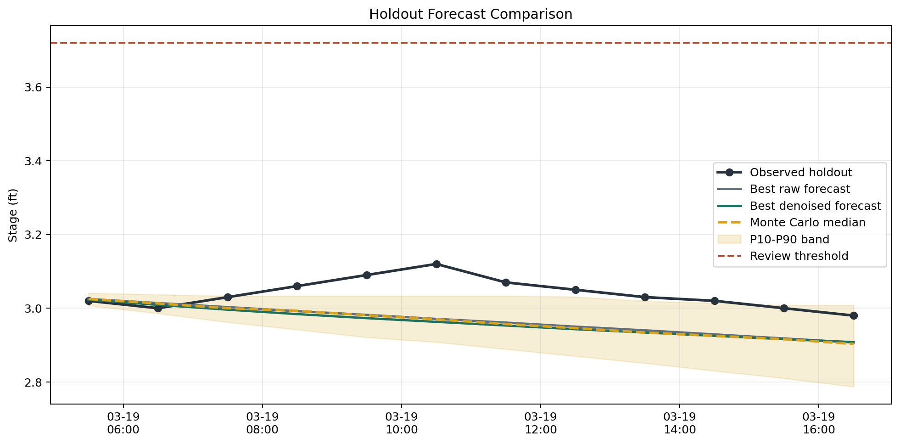
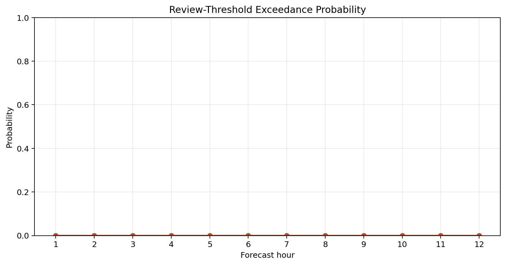

Arroyo Flood Forecasting Lab
This public South Texas gauge is used as a reproducible analog for an Arroyo-style forecasting workflow.
08211500Primary site code
rawWinning signal branch
3Selected AR order
0.0075Raw PMSE
0.0081Denoised PMSE
3.72Review threshold (ft)
Primary Source
Nueces Rv at Calallen, TX (08211500)
Interpretation
Raw-versus-denoised comparison is driven by holdout PMSE rather than by assuming wavelet preprocessing always wins.
Monte Carlo scenario bands translate residual uncertainty into a reviewer-friendly risk view instead of a single deterministic trace.
Chart Pack





Cross-Site Comparison
Noisiest site: 08211520. Largest denoising benefit: 08211520.
The noisiest site also shows the largest wavelet benefit in this sample.

| Site | Code | Volatility | Raw PMSE | Denoised PMSE | Benefit | Winner |
|---|---|---|---|---|---|---|
| Nueces Rv at Calallen, TX | 08211500 | 0.0159 | 0.0075 | 0.0081 | -0.0006 | raw |
| Oso Ck at Corpus Christi, TX | 08211520 | 0.0432 | 0.0005 | 0.0001 | 0.0004 | denoised |